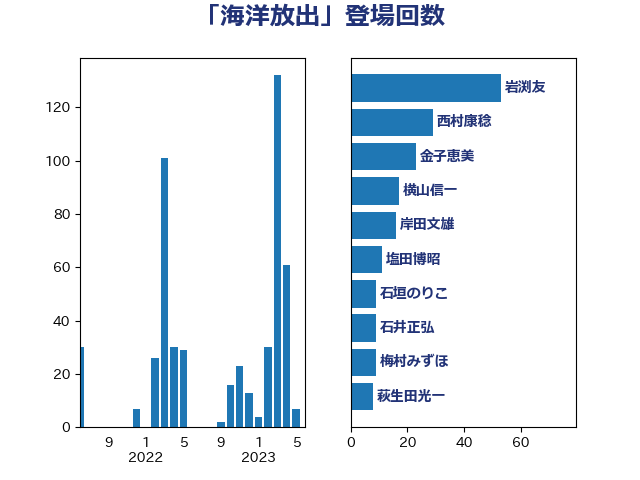

単語「海洋放出」

| 岩渕友 | 日本共産党 | 67 回 |
| 金子恵美 | 立憲民主党 | 41 回 |
| 石井苗子 | 日本維新の会 | 20 回 |
| 梅村みずほ | 日本維新の会 | 19 回 |
| 足立康史 | 日本維新の会 | 18 回 |
| 高橋千鶴子 | 日本共産党 | 18 回 |
| 竹内真二 | 公明党 | 17 回 |
| 音喜多駿 | 日本維新の会 | 17 回 |
| 中野洋昌 | 公明党 | 16 回 |
| 山崎誠 | 立憲民主党 | 16 回 |
| 江島潔 | 自由民主党 | 16 回 |
| 山添拓 | 日本共産党 | 14 回 |
| 横山信一 | 公明党 | 13 回 |
| 徳永エリ | 立憲民主党 | 12 回 |
| 塩田博昭 | 公明党 | 11 回 |
| 小泉進次郎 | 自由民主党 | 11 回 |
| 小熊慎司 | 立憲民主党 | 11 回 |
| 森まさこ | 自由民主党 | 11 回 |
| 梶山弘志 | 自由民主党 | 10 回 |
| 紙智子 | 日本共産党 | 10 回 |
| 萩生田光一 | 自由民主党 | 9 回 |
| 松沢成文 | 日本維新の会 | 8 回 |
| 野上浩太郎 | 自由民主党 | 8 回 |
| 石井正弘 | 自由民主党 | 7 回 |
| 吉田とも代 | 日本維新の会 | 6 回 |
| 岸田文雄 | 自由民主党 | 6 回 |
| 石垣のりこ | 立憲民主党 | 6 回 |
| 阿部知子 | 立憲民主党 | 6 回 |
| 小沢雅仁 | 立憲民主党 | 5 回 |
| 山口壯 | 自由民主党 | 5 回 |
| 玄葉光一郎 | 立憲民主党 | 5 回 |
| 石井章 | 日本維新の会 | 5 回 |
| 山下芳生 | 日本共産党 | 4 回 |
| 岸真紀子 | 立憲民主党 | 4 回 |
| 滝波宏文 | 自由民主党 | 4 回 |
| 田名部匡代 | 立憲民主党 | 4 回 |
| 長友慎治 | 国民民主党 | 4 回 |
| 倉林明子 | 日本共産党 | 3 回 |
| 小池晃 | 日本共産党 | 3 回 |
| 早坂敦 | 日本維新の会 | 3 回 |
| 枝野幸男 | 立憲民主党 | 3 回 |
| 横沢高徳 | 立憲民主党 | 3 回 |
| 源馬謙太郎 | 立憲民主党 | 3 回 |
| 片山大介 | 日本維新の会 | 3 回 |
| 牧義夫 | 立憲民主党 | 3 回 |
| 笠井亮 | 日本共産党 | 3 回 |
| 西銘恒三郎 | 自由民主党 | 3 回 |
| 鎌田さゆり | 立憲民主党 | 3 回 |
| 前原誠司 | 国民民主党 | 2 回 |
| 小野田紀美 | 自由民主党 | 2 回 |
| 平林晃 | 公明党 | 2 回 |
| 池畑浩太朗 | 日本維新の会 | 2 回 |
| 津島淳 | 自由民主党 | 2 回 |
| 浅野哲 | 国民民主党 | 2 回 |
| 茂木敏充 | 自由民主党 | 2 回 |
| 馬場雄基 | 立憲民主党 | 2 回 |
| 務台俊介 | 自由民主党 | 1 回 |
| 國重徹 | 公明党 | 1 回 |
| 大塚耕平 | 国民民主党 | 1 回 |
| 安達澄 | 無所属 | 1 回 |
| 平沢勝栄 | 自由民主党 | 1 回 |
| 庄子賢一 | 公明党 | 1 回 |
| 柳ヶ瀬裕文 | 日本維新の会 | 1 回 |
| 泉健太 | 立憲民主党 | 1 回 |
| 浜地雅一 | 公明党 | 1 回 |
| 福島伸享 | 無所属 | 1 回 |
| 稲津久 | 公明党 | 1 回 |
| 緑川貴士 | 立憲民主党 | 1 回 |
| 美延映夫 | 日本維新の会 | 1 回 |
| 若宮健嗣 | 自由民主党 | 1 回 |
| 菅義偉 | 自由民主党 | 1 回 |
| 青山繁晴 | 自由民主党 | 1 回 |